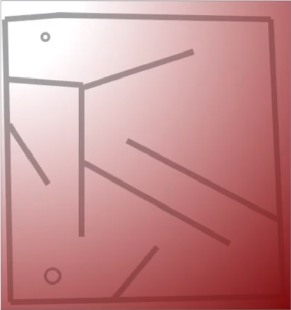
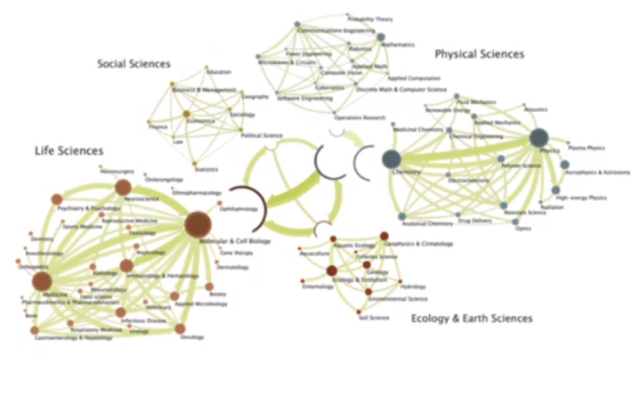
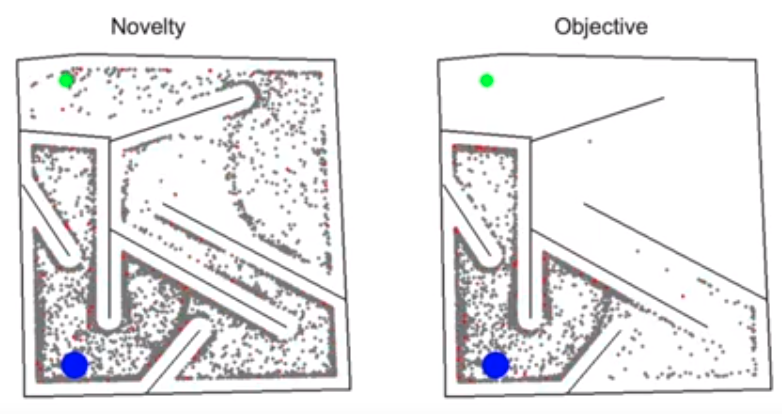
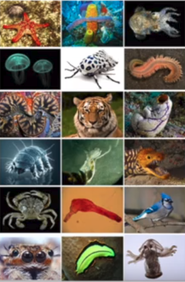
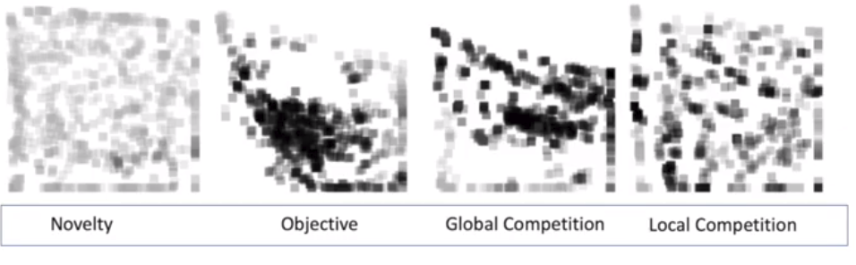
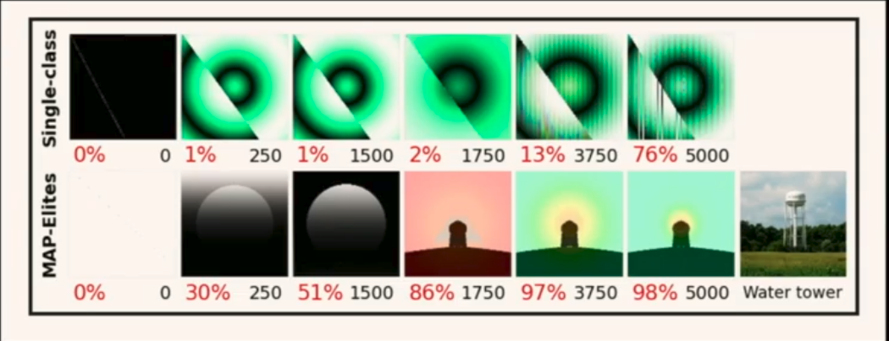

Summary of ICML 2019 Jeff Clune's talk on Recent Advances in Population-Based Search for Deep Neural Networks. pt1
Introduction:
What is Population-based Search:
To maintain a population of candidate solutions, and optimizing
Example:
A Vanilla Genetic Algorithm -
1.start by randomly initializating members of a population.
2.Evaluate them.
3.Cull out bad performing ones.
4. Make noisy copies of good performing ones.
People might resent population based search since it is blackbox.
There are no theoretical guarentees for convergence etc.
Diversity-centric Search:
Motivation:
Finding the right objective function is crucial to success in doing Machine
Learning.
However there exists the problem of "Deception", where as we aim for very ambitious and
far reaching objectives, the objective itself could be misguiding.
We can intuitively see this problem through this example:

Consider this maze where the objective is to travel an agent from the left bottom corner to the top left corner.
Here if we only use the distance between where the agent ends up with and the final objective, then we will be mislead. We must first
accept a period of "worse" performances (fitness) or negative reward in order to not be stuck in the local minima.
Perhaps optimizing the diversity of the solutions could be an alternative approach.By optimizing
the diversity we are exploring many things which on the surface might not seem to contribute to
the ultimate solution. An example could be: we want to increase our computing power ( invent the computer)
after inventing the abacus;the right way to go is not to build bigger and bigger abacuses, which seems
like the obvious solution. Rather, we should explore areas of science such as electricity and information theory.

Novelty search(Lehman and Stanley 2008):
Instead of optimizing the fitness function as correspondant to performance on an objective.
We could measure the fitness as the diversity of the population's behaviours to the previous
population's behaviours.
For instance, for the maze navigation task, we could be measuring the difference betweeen the final distance
explored by a member of the population to the rest of the population as the fitness.

here we see that novelty helped with getting unstuck from local minima

Picture - Novelty search finding better solution to Objective based search on bi-pedal robot gait task.
Related works:
Autonomous mental development/intrinsic motivation/curiosity
(Oudeyer and Kaplan 2007,Schmidhuber 1991)
In Deep reinforcement learning:
DIAYN
Curiosity-driven exploration
Skew-fit
Hindsight Experience Replay
Unsupervised Meta-learning
Diversity is All you need
Curiosity-driven exploration by Self-Supervised Prediction:
In the talk curiosity driven exploration by self supervised prediction is used as an example of using the principle of diversity to explore in RL applications. Basically we attempt to learn model of the enviornment by predicting the next state (t+1) based on the current state and our action taken. (prediction is done in an encoded feature space). Then we can use the prediction error of this model as an internal reward of "curiosity" to encourage exploratory policies.
Conclusions:
It is interesting that divergence as an evolutionary objective could work so well alone.
How can we combine objective based and divergence based exploration?
Combining Diversity and Objective based search:
Combining Novelty and Achievement(Mouret and Doncieux 2012):
Optimizing both novelty and objective simutaneously through perhaps a weighted average.
Optimizing the objective until stuck, then switch to novelty.
Population-based multi-objective optimization(Fonseca et al.1995):
Basically having both novelty and objective as objectives, and ranking populations based
on their order of fitness on both criteria and a member of the population A is only better
performing then another member B if
objective_score(A)>objective_score(B)
and
novelty_score(A)>novelty_score(B)
Problem:
The whole point of novelty search is to avoid the problem of deception.
Perhaps we could evolve separately Novelty and Objective.
Quality Diversity:
How do we generate diverse populations of different solutions with each solution a quality solution
that is explored. How do we learn from previous populations generated by diversity, and not just
discard valuable information which might be essential towards ultimately meeting the objective?
These are the questions quality diversity aims to solve.
Quality Diversity with local competitions:

We could first evolve different diverse solutions and then optimize the solutions by letting them
compete against itself.
consider Natural Evolution, we have a diverse amount of solutions to life, and all of them are very quality solutions of different niches. One thing we could do is to generate different populations but attempt to "speciate" them and have them locally compete with each other. This is also used in the NEAT alghorithm.

It turns out that local Competition gives you diverse yet high performing solutions.
but also let solutions learnt from different "niches" help other populations.
You first initialize a table which represents the "types" of populations that you intend to generate.
We pick a random "type" and generate a new population based on the current best population of that
"type". If no population has been generated yet, we randomly initialize a population, otherwise,
we then mutate that new population. The mutated population, if it is of another type and is performing
better than the current best performer of that type, we replace that type with this new population.
We continue the evolution until it converges to many different interesting solutions.
How to choose the "types"?:
we could manually create features such as "height" and "weight" of a generated animal. Or we could use
some sort of dimensional compression mechanism perhaps an autoencoder to generate a latent space.
Map elite gives a very thorough exploration of the whole "morphology space", or "type space", whatever you call it. The above image is an attempt to use map elites to generate images which correspond to classes of the alexnet trained on the ImageNet dataset. We can see that it can easily fall into some local minima, but map elites facilitates learning a diverse solution which comes to inspire each other, effective in this task.